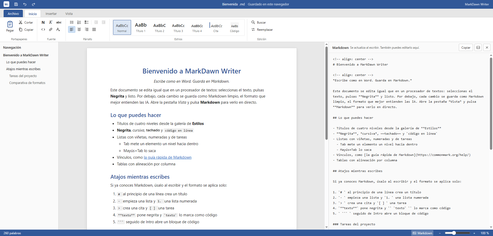

MarkDawn Writer Documentos
Escribe como en Word: estilos, listas, tablas, imágenes y vínculos. Abre cualquier archivo .md sin romperlo.
- Cinta de Word y galería de estilos
- Panel con el Markdown en directo, también editable
- Pegado limpio desde Word y Google Docs